아름다운 것
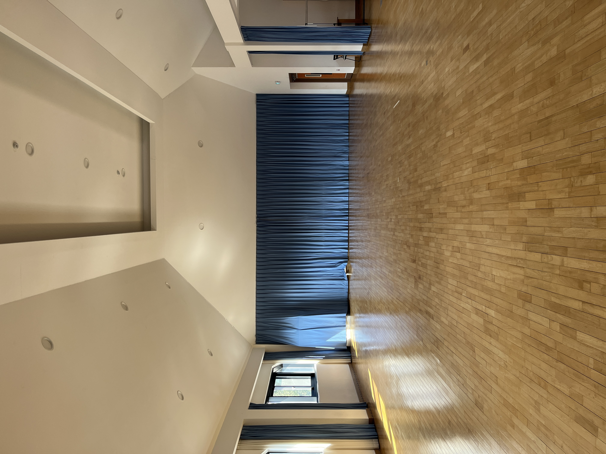
동렬과 학교에 놀러갔다. 새로 증축한 오이리트미실 구경하러. 높고 넓다.
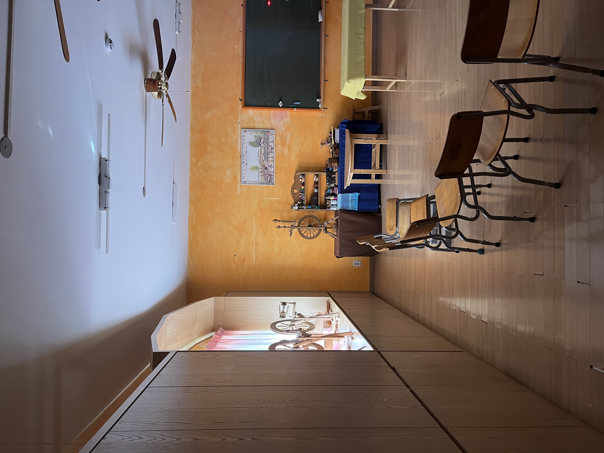

교무실. Rudolf Steiner.
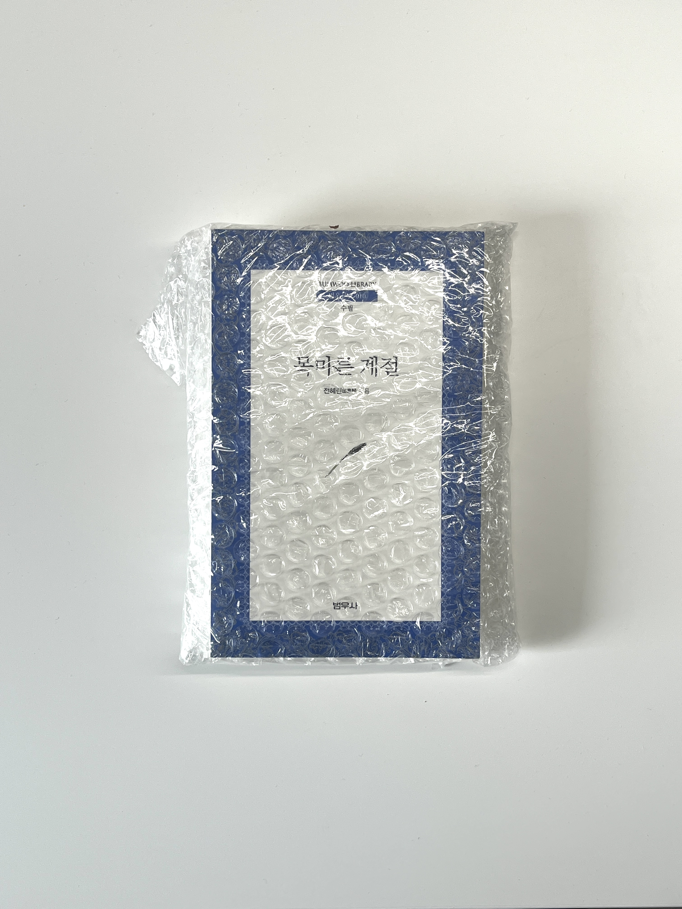
돈이 없는것 치고는 비싼책을 샀다. 계좌에 7천원이 남았다.

2월. 아름다운 것
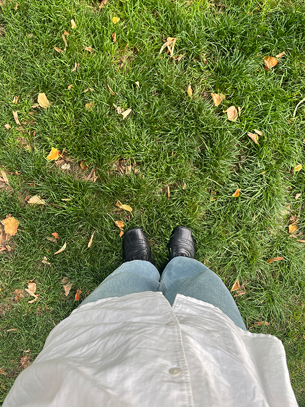
흰 셔츠에 적자두 과즙이 튀었다. 하지만 용서할 수 있다.
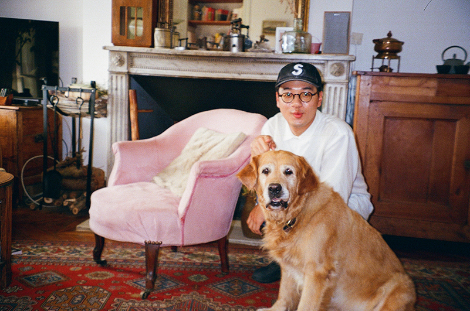
저기봐!
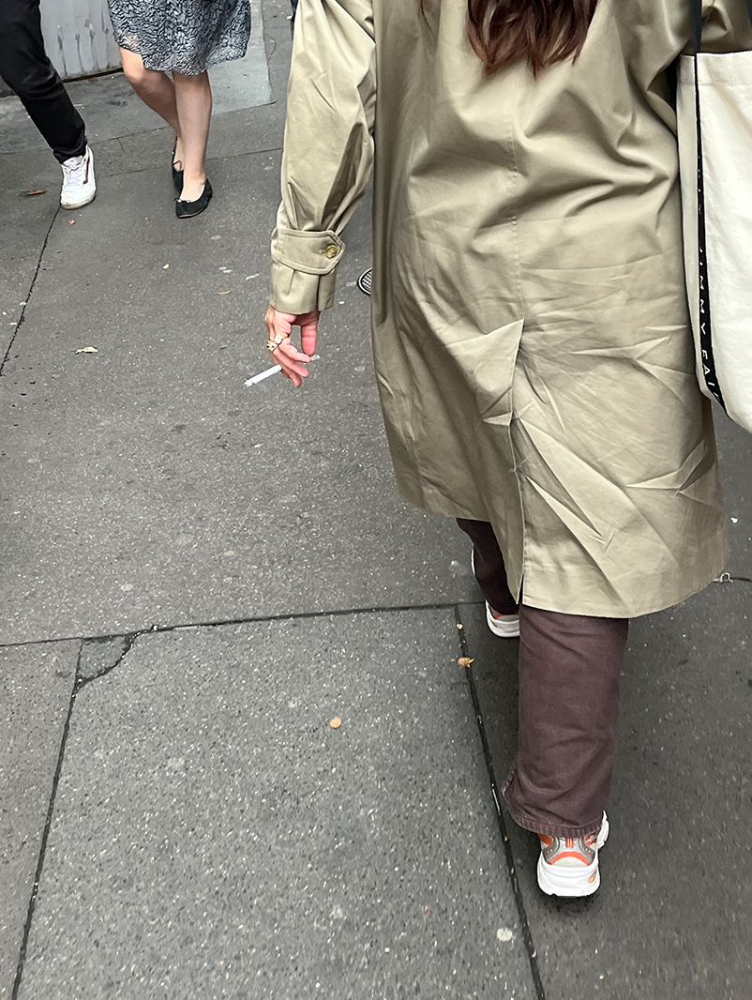
프랑스 한달살이 시작!
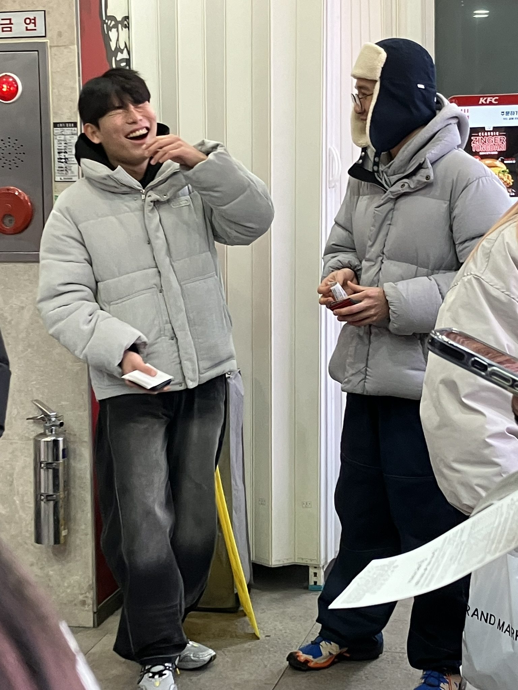
크리스마스에 KFC에서..
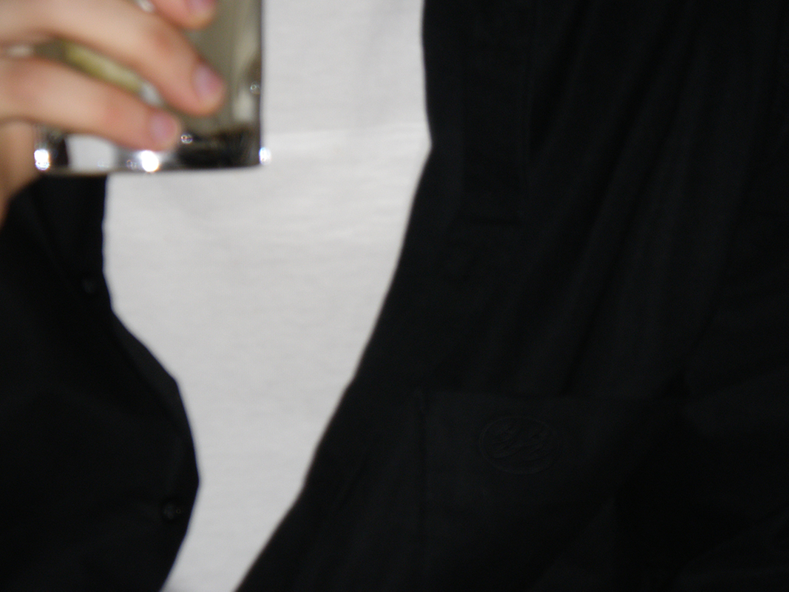
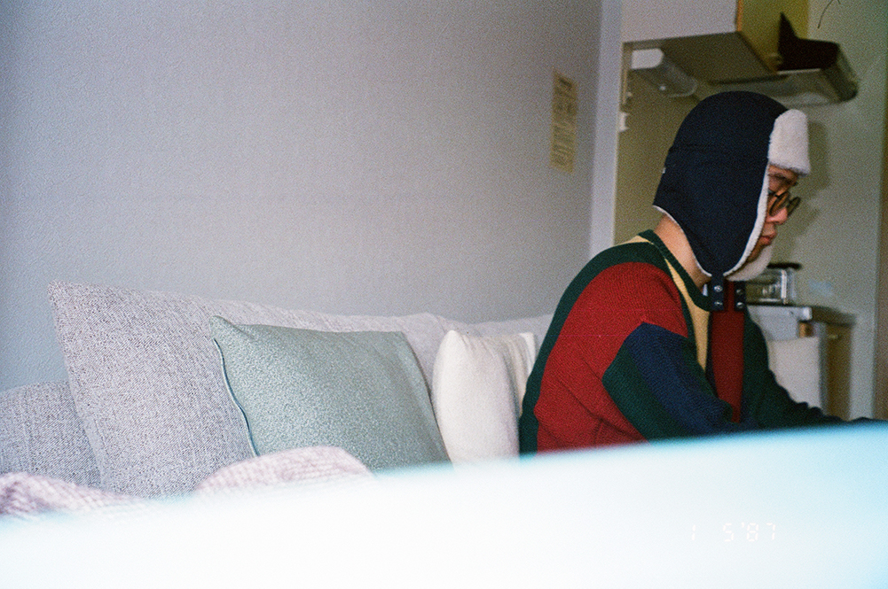
도쿄 빈티지샵에서 산 옷. 원색에 강렬한..!
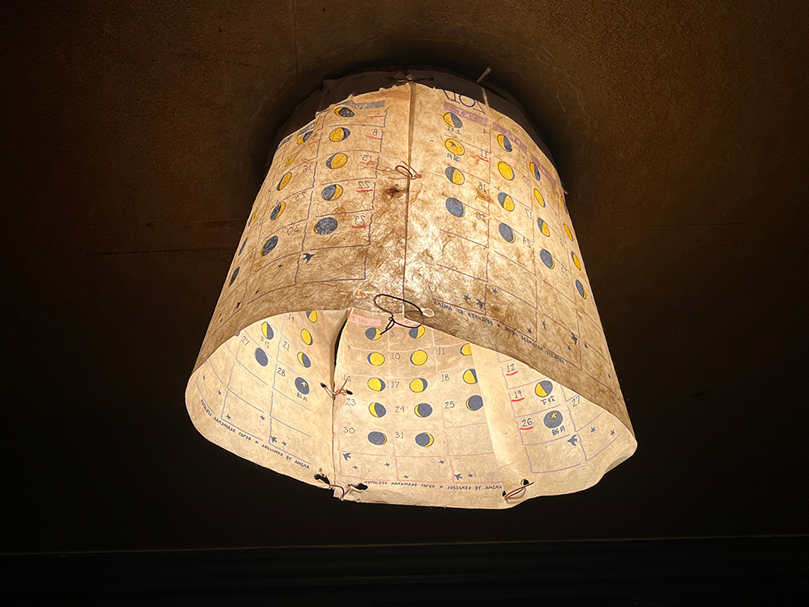
rengedo에 모든 소품이 맘에 듦
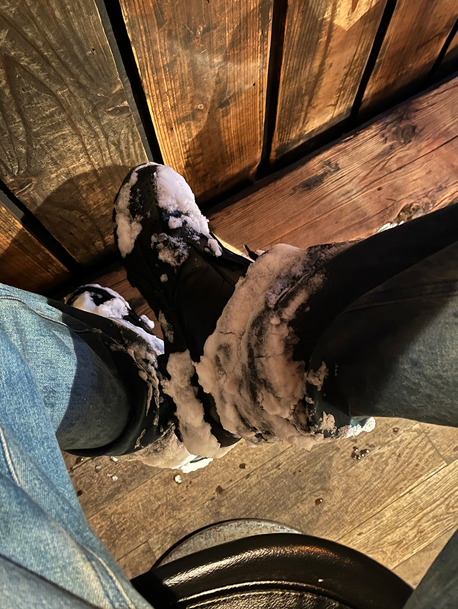
오타루는 눈으로 가-득하다.
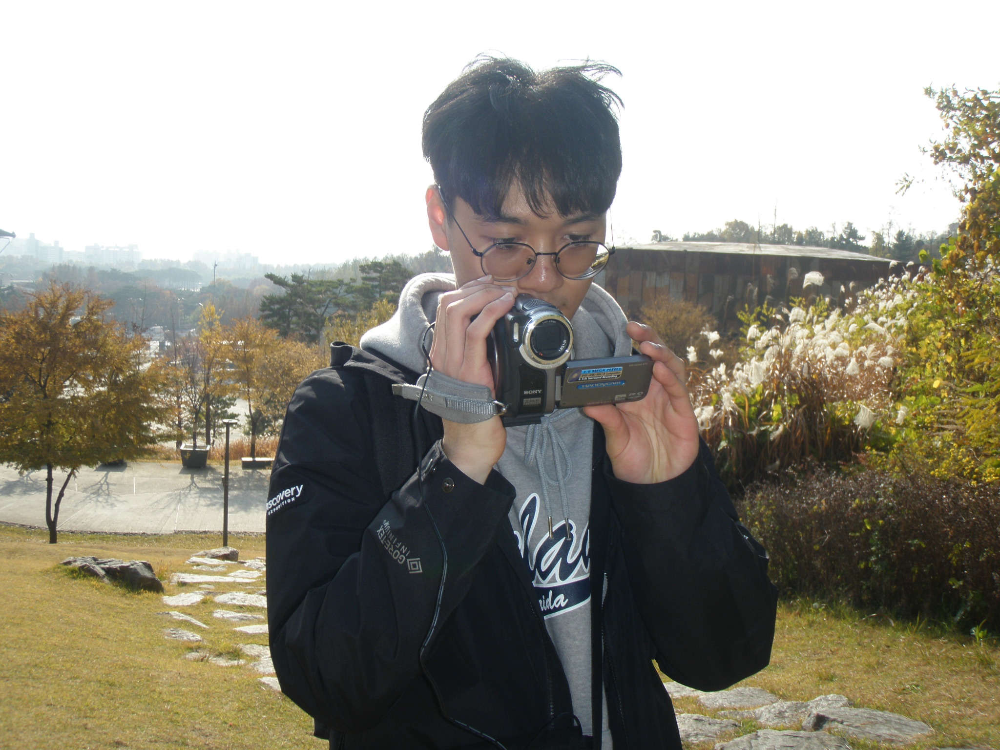
가을에 문화비축기지에서 캠코더와 나
[1]
[2]